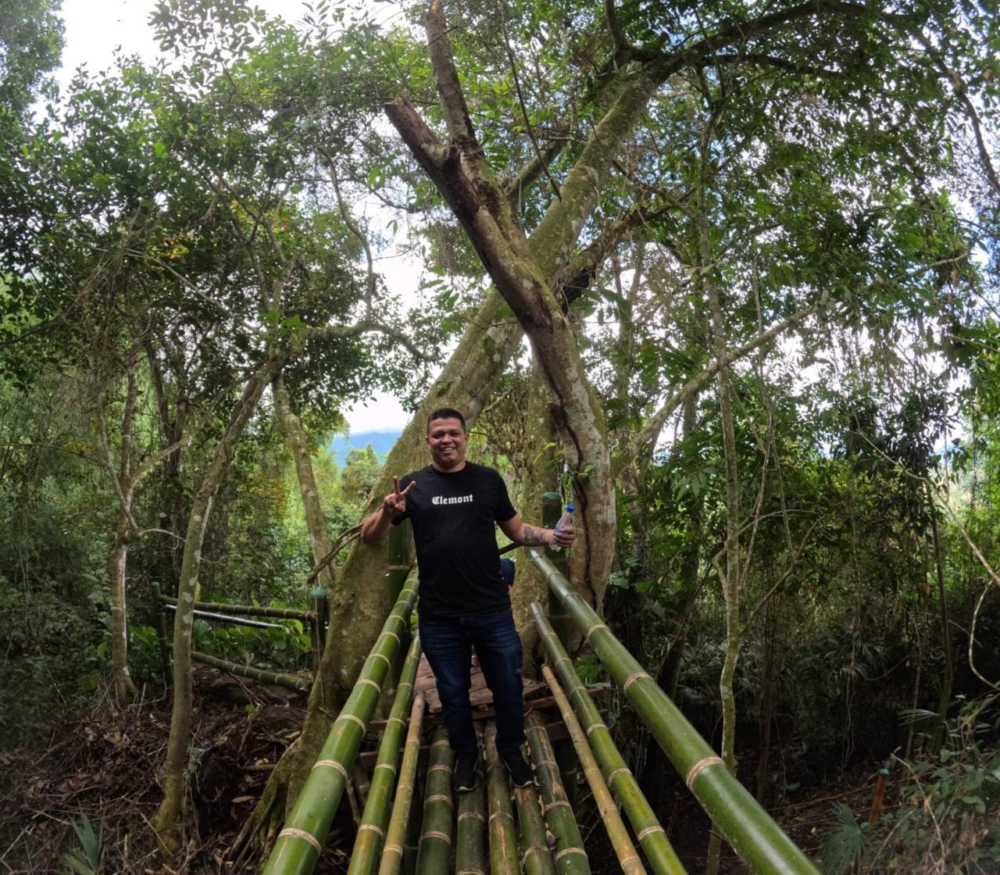
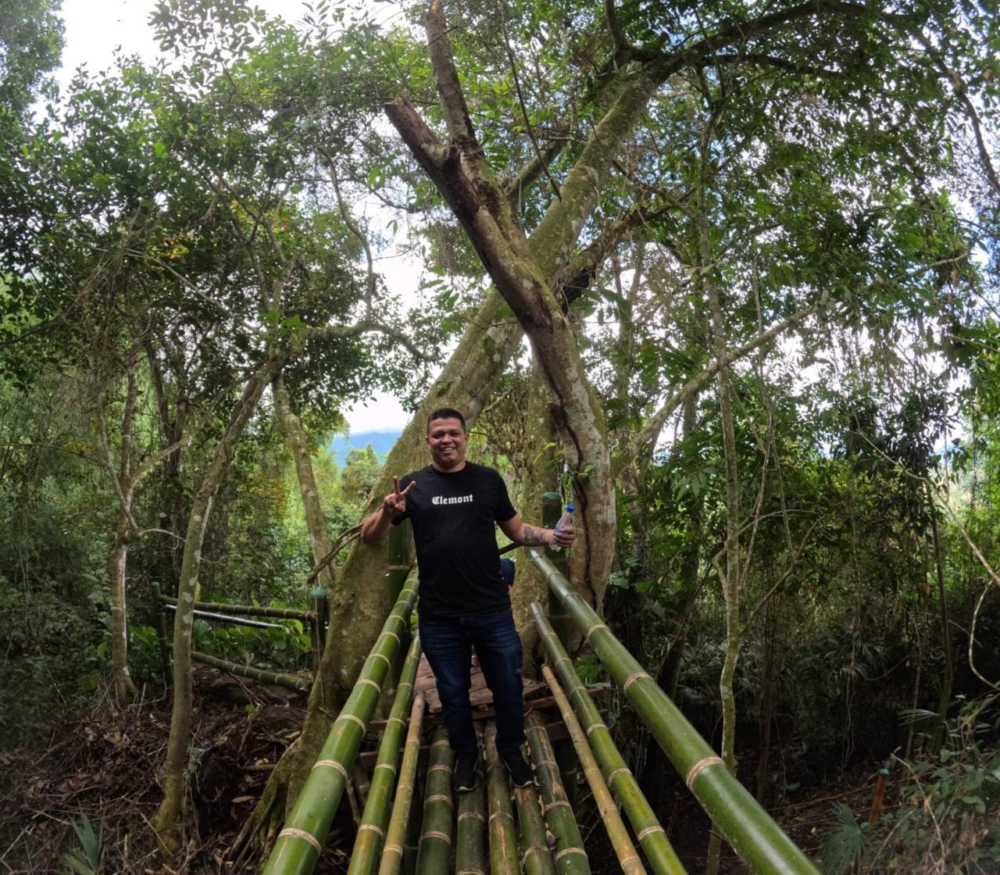
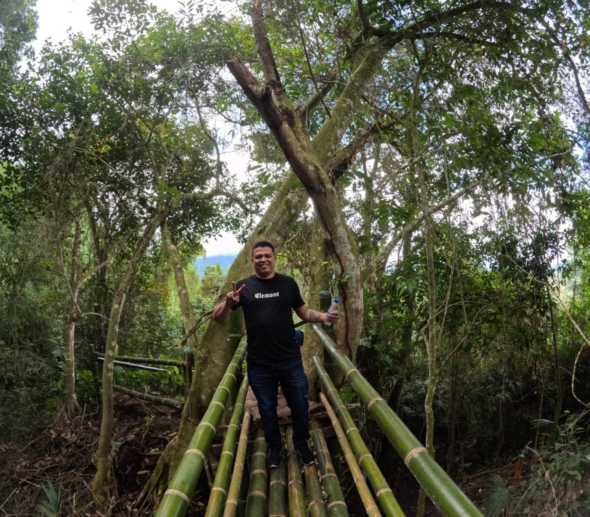

Galería
Un vistazo a lo que podrás vivir en el Parque de la Panela.
 


Naturaleza, tradición, cultura y aventura en un solo lugar. Descubre el auténtico sabor del campo colombiano.
Planifica tu visita ContáctanosEl Parque de la Panela es un destino diseñado para disfrutar la tradición panelera, la naturaleza y la cultura campesina.
Conoce el proceso tradicional desde la caña hasta la panela, en una experiencia auténtica.
Caminatas, paisajes y un ambiente perfecto para desconectarte del ruido de la ciudad.
Vive actividades campesinas, gastronomía típica y espacios ideales para fotos inolvidables.
Actividades para toda la familia, grupos turísticos y visitantes nacionales e internacionales.
Aprende sobre la caña, el trapiche y el proceso artesanal con guías locales.
Participa en el proceso de cocción y elaboración. Una experiencia cultural real.
Disfruta productos típicos: aguapanela, postres, comidas tradicionales y más.
Un vistazo a lo que podrás vivir en el Parque de la Panela.

Información importante para que disfrutes al máximo tu experiencia.
Puedes llegar en vehículo particular o transporte local. Muy pronto agregaremos el mapa exacto y rutas recomendadas.
Recomendación: trae ropa cómoda, cámara y muchas ganas de vivir el campo.
Reserva tu visita o pide información para grupos turísticos.
Estamos construyendo experiencias premium para visitantes: eventos culturales, rutas guiadas y experiencias paneleras exclusivas.